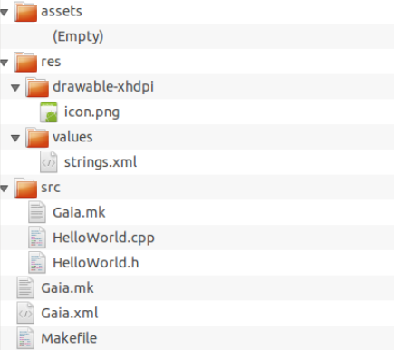

# This file is only used to build app under COS SDK SDK_ROOT := /home/username/COSSDK PROJECT_ROOT := /home/username/example/HelloWorld SDK_VERSION := 6 DEFAULT_APP_TARGET_SDK := 16 SHELL := /bin/bash SDK_INCLUDE := $(SDK_ROOT)/include/ include $(SDK_ROOT)/build/core/main.mk include $(PROJECT_ROOT)/Gaia.mk
SDK_ROOT is the first var you should set in Makefile, its value is the location of COSSDK.(Current, out SDK is provide with a zip package, and you should unzip it). SDK_ROOT tell make where to find need build-scripts which help to build gaia app. PROJECT_ROOT stores the root path of your app project. SDK_VERSION stores the version number of SDK you use. You should not change value of DEFAULT_APP_TARGET_SDK, SHELL and SDK_INCLUDE.
include $(SDK_ROOT)/build/core/main.mk
This is the entry point of SDK build scripts. YOU SHOULD NOT CHANGE THIS LINE IN YOURS.
include $(PROJECT_ROOT)/Gaia.mk
Include the root Gaia.mk in your project
LOCAL_PATH := $(call my-dir) include $(CLEAR_VARS) LOCAL_PACKAGE_NAME := HelloWorld LOCAL_GAIA_SHARED_LIBRARIES := libHelloWorld LOCAL_CERTIFICATE := platform include $(BUILD_GAIA_PACKAGE) include $(LOCAL_PATH)/src/Gaia.mk
LOCAL_PACKAGE_NAME := HelloWorld
LOCAL_PACKAGE_NAME will be used for final apk name. Here is helloworld, so the final apk will be "HelloWorld.apk" in $(PROJECT_ROOT)/out/release/bin/
LOCAL_GAIA_SHARED_LIBRARIES := libHelloWorld
This is used as final so file name. For this app, ths so name is "libHelloWorld.so"
LOCAL_CERTIFICATE := platform
This is used as final so file name. For this app, ths so name is "libHelloWorld.so"
include $(BUILD_GAIA_PACKAGE)
You always need this line to build final apk.YOU SHOULD NOT CHANGE THIS LINE IN YOURS.
include $(LOCAL_PATH)/src/Gaia.mk
Include Gaia.mk, which in turn build the so file
<?xml version="1.0" encoding="utf-8"?>Every application must have an Gaia.xml file (with precisely that name) in its root directory. The manifest presents essential information about the application to the COS system, information the system must have before it can run any of the application's code. Details refer to AndroidManifest.<manifest xmlns:gaia="http://schemas.gaia.com/pkg/res/gaia" package="helloworld" gaia:isGaiaPackage="true" gaia:isCosPackage="true" gaia:cosApiVersion="1" gaia:versionCode="1" gaia:versionName="1.0">
<skip-erased /> <application gaia:icon="@drawable/icon" gaia:label="@string/app_name" gaia:debuggable="true"> <page gaia:name=".HelloWorld" gaia:label="@string/app_name"> <demand-filter> <action gaia:name="android.intent.action.MAIN" /> <category gaia:name="android.intent.category.LAUNCHER" /> </demand-filter> </page> </application> <uses-sdk gaia:minSdkVersion="7" /> </manifest>
You should place each type of resource in a specific subdirectory of your project's res/ directory. Details refer RESOURCES
#pragma once #include <gaia/core/Page.h>namespace gaia { namespace core { class Persistence; } namespace ui { class LinearController; class TextWidget; } }
class HelloWorld: public gaia::core::Page { public: HelloWorld(); ~HelloWorld(); protected: virtual void onInit(gaia::core::Persistence* const p); virtual void onTear(); private: gaia::ui::LinearController* mpCtrl; gaia::ui::TextWidget* mpText; };
#define DEBUG_LEVEL 0 #define LOG_TAG "HelloWorldSample"#include <gaia/core/Context.h> #include <gaia/core/Persistence.h> #include <gaia/core/vision/Scene.h> #include <gaia/ui/LinearController.h> #include <gaia/ui/TextWidget.h> #include <gaia/base/String.h> #include "HelloWorld.h" #include "helloworld/R.h"
using namespace gaia::core; using namespace gaia::ui; using namespace gaia::base;
HelloWorld::HelloWorld() : mpCtrl(NULL), mpText(NULL) { }
HelloWorld::~HelloWorld() { }
void HelloWorld::onInit(Persistence* const p) { Scene* pScene = Scene::SceneFactory(this);
mpText = new TextWidget(this); mpText->setText(helloworld::R::string::app_name); mpText->setTextSize(30); mpCtrl = new LinearController(this); mpCtrl->addWidget(mpText); pScene->attachController(mpCtrl); pScene->setupSceneLayout();}
void HelloWorld::onTear() { delete mpCtrl; delete mpText; getSceneSingleton()->SceneDestroy(); }
template class Export<HelloWorld, Page>;
LOCAL_PATH := $(call my-dir) include $(CLEAR_VARS) LOCAL_MODULE := libHelloWorld LOCAL_GAIA_R_PACKAGES := HelloWorld LOCAL__PACKAGE_NAME := HelloWorld LOCAL_MODULE_TAGS := optional LOCAL_PRELINK_MODULE := false LOCAL_SRC_FILES := HelloWorld.cpp LOCAL_SHARED_LIBRARIES := libapi.$(strip $(SDK_VERSION)) include $(BUILD_SHARED_LIBRARY)Top three line must be set and in front any other line.
LOCAL_GAIA_R_PACKAGES := HelloWorld
This is very important. If you want use resource HelloWorld here(your resource, THIS NAME SHOULD BE THE SAME AS THE $(LOCAL_PACKAGE_NAME) YOU SET IN Makefile for var LOCAL_GAIA_R_PACKAGES.
LOCAL_SRC_FILES := HelloWorld.cpp
You should pull all source file need to compile into so in LOCAL_SRC_FILES
LOCAL_PRELINK_MODULE := false
YOU SHOULD NOT CHANGE THIS.
LOCAL_SHARED_LIBRARIES := libapi.$(strip $(SDK_VERSION))
Put all the dependent so in LOCAL_SHARD_LIBRARIES. All SDK provide libs located in $(SDK_ROOT)lib. YOU DONT ADD SUFFIX .SO in here.
include $(BUILD_SHARED_LIBRARY)
This include the real script to build so file. DON NOT CHANGE THIS
Build steps
1. open shell, then cd $(PROJECT_ROOT)
Switch project folder of helloworld in shell, $(PROJECT_ROOT) is the root folder of helloworld
2. Create gen/R
Create gen/R folder, which will be used to put R.h, R.cpp
3. Use follow command to generate needed resource code
$(SDK_ROOT)/prebuilt/linux-x86/bin/aapt package -z -m -J $(PROJECT_ROOT)/gen/R -A $(PROJECT_ROOT)/assets -M $(PROJECT_ROOT)/Gaia.xml -S $(PROJECT_ROOT)/res -I $(SDK_ROOT)/data/res/gaia-framework-res-common.pkg -I $(SDK_ROOT)/data/res/gaia-framework-res.pkg
Please use real path substitue the $(SDK_ROOT) and $(PROJECT_ROOT)
4. Type make and hit ENTER in the shell
make command: make -f $(PROJECT_ROOT)/out/release/obj/Makefile
After the these steps, you can find the final apk under $(PROJECT_ROOT)/out/release/bin
Follow these steps to insall apk in devices:
By this command, we can check if the device connected to pc correctly